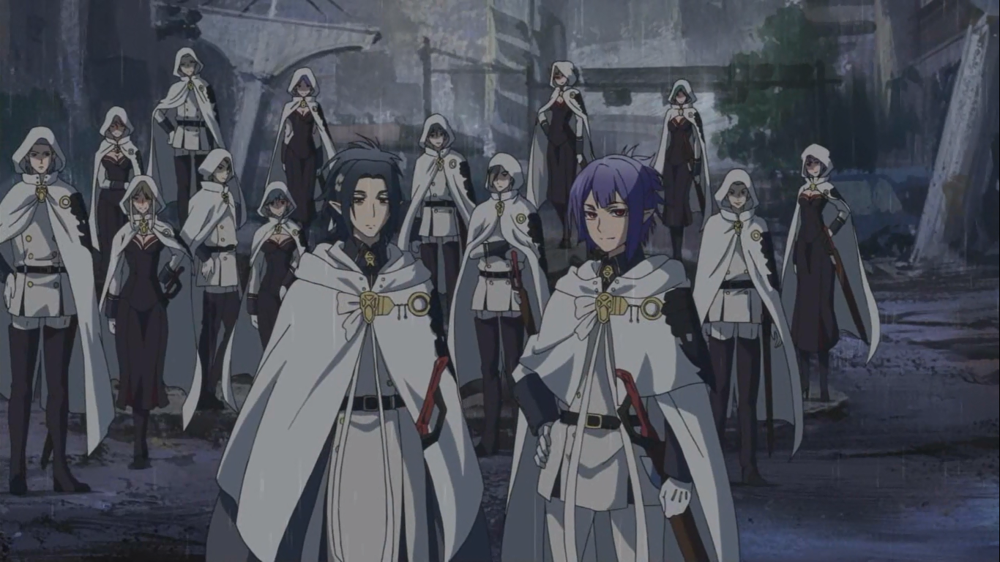
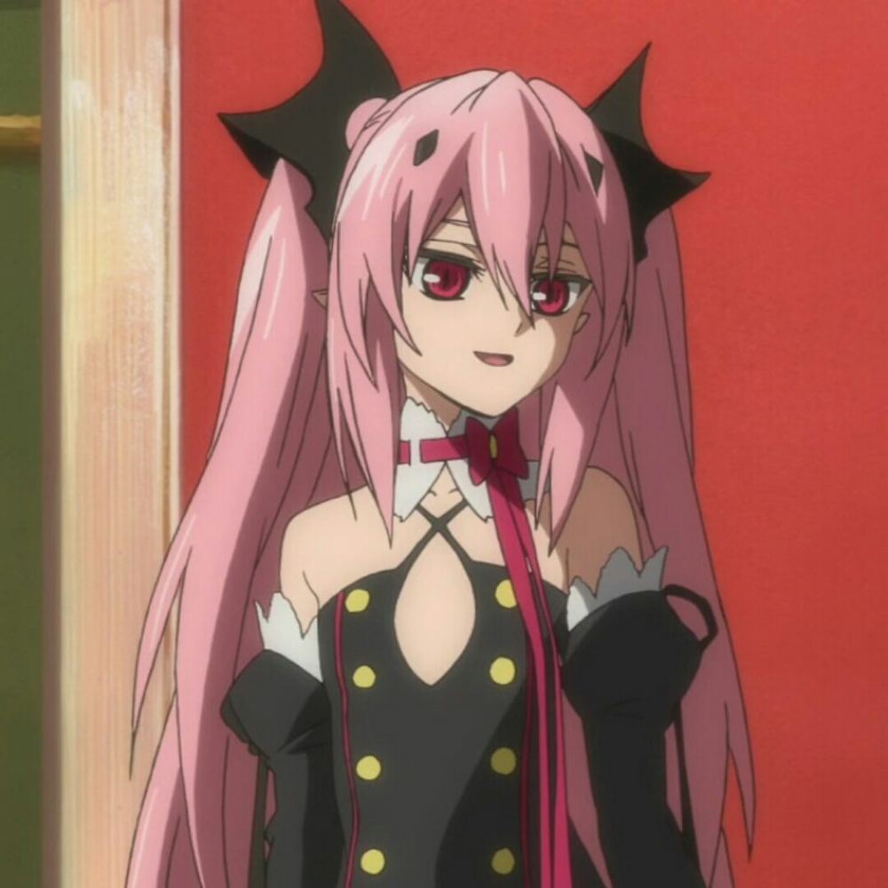
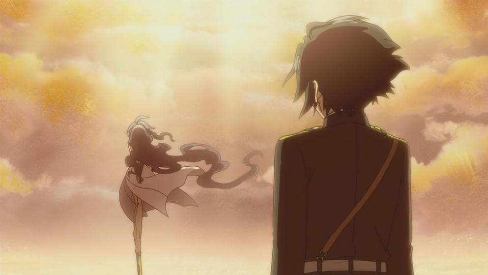

The vampires are a powerful immortal race of human-like creatures that feed off of human blood. They are all former humans who were turned when they ingested vampire blood. After the apocalypse wiped out most of humanity, they rose from the shadows and took over the world, subjecting the rest of humanity to their oppressive and predatory natures.
The progenitors are treated as nobles among the vampires. They are the strongest among the vampires and are thus far stronger than the average vampire. Their strength is often determined by their progenitor ranks, ranging from the 1st Progenitor, the strongest, to the 20th Progenitor, the weakest.
3rd Progenitor Krul Tepes
3rd Progenitor Lest Karr
7th Progenitor Ferid Bathory
13th Progenitor Crowley Eusford
17th Progenitor Chess Belle
17th Progenitor Horn Skuld
Hyakuya Mikaela is the secondary protagonist in Owari no Seraph. He was turned into a vampire by 3rd Progenitor Krul Tepes early in the story. As Hyakuya Yuichiro's childhood friend, he is someone extremely important to the human boy, despite belonging to the race he, Yuichiro, vowed to exterminate.
Lacus Welt
Rene Simm
The demons are a source of power sealed in what humans call Cursed Gear, which was invented for humans to use against the vampires. Demons feed off of human desire and use it to give more power to the humans with which they have a contract with. In exchange for this power, humans who have a contract with a demon are subjected to possession by their demon should they let their guard down. Demons are often former vampires who were turned under certain circumstances.
Hyakuya Yuichiro's demon Asuramaru
Hiragi Shinya's demon Byakkomaru
Saotome Yoichi's demon Gekkouin
Kimizuki Shiho's demon Kiseki-o
Hiragi Shinoa's demon Shikama Doji
Sangu Mitsuba's demon Tenjiryu
Ichinose Guren's demon Mahiru-no-Yo